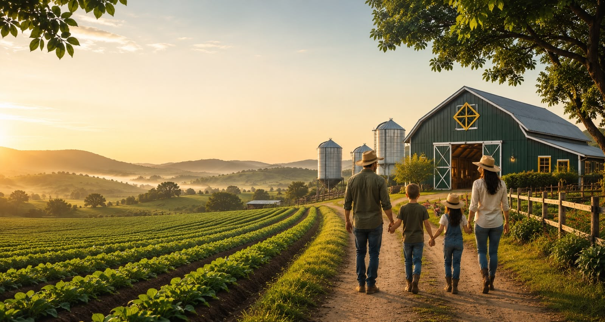
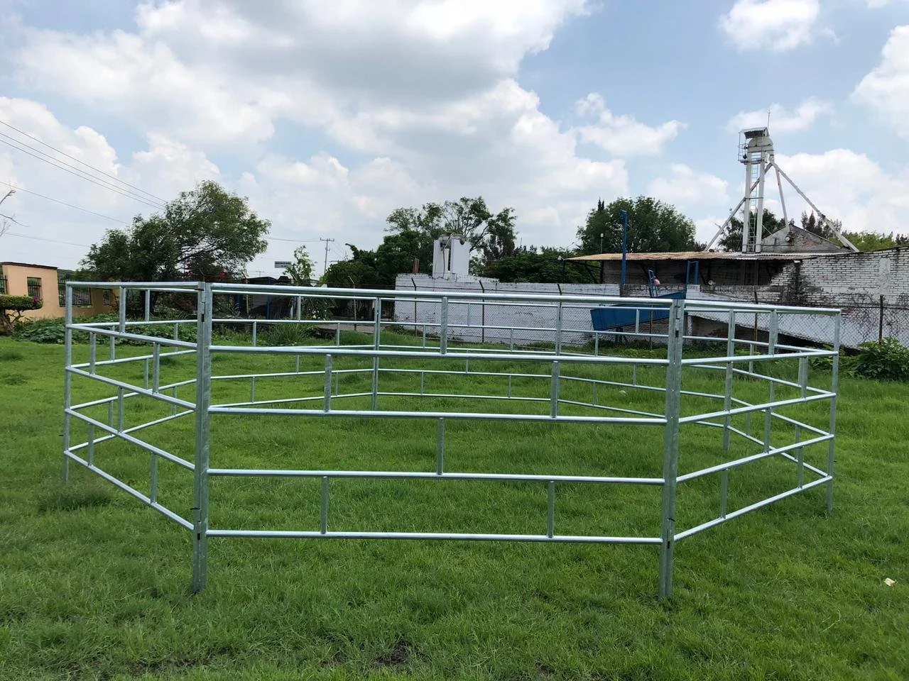

Kevin A. Pichardo
Desarrollador del proyecto

Finca ganadera desde 2004
Innovando el campo, cuidando la tradición: producimos leche, quesos y carne bovina bajo prácticas responsables que respetan la tierra y el animal.
Quiénes somos
Fundada en el año 2004 por la familia Reyes en las tierras altas de la región, Finca El Progreso nació como un pequeño hato familiar de doce vacas lecheras. Con el paso de los años, y sin perder nunca la forma artesanal de trabajar la tierra, hemos crecido hasta convertirnos en un referente local de la ganadería sostenible, combinando el conocimiento heredado de nuestros abuelos con prácticas modernas de manejo animal.
Producir alimentos de origen animal de altísima calidad, mediante prácticas sostenibles que garanticen el bienestar de nuestro ganado y el cuidado del medio ambiente.
Ser reconocidos en el año 2030 como la finca ganadera líder en la región por su innovación, trazabilidad y compromiso con las comunidades rurales.
Honestidad, respeto por los animales, cuidado de la tierra, trabajo en equipo y mejora continua guían cada una de nuestras decisiones diarias.
Desarrollador del proyecto
Desarrollador del proyecto



Lo que hacemos

Ordeño mecanizado dos veces al día con estrictos protocolos de higiene y cadena de frío.

Comercialización de ganado bovino con documentación sanitaria y genética certificada.

Engorde a pasto y suplementación balanceada para carne de excelente marmoleo.

Acompañamiento técnico a pequeños y medianos productores de la región.

Programas de inseminación artificial y manejo reproductivo para mejorar el hato.

Coordinamos el traslado seguro del ganado y los productos hasta su destino final.
Directo del campo

Ordeñada y envasada el mismo día, sin conservantes.
RD$ 90 / galón
Elaborado con la receta tradicional de la familia.
RD$ 150 / libra
Fermentado lentamente para una textura cremosa.
RD$ 80 / litro
Ejemplares con registro genealógico y sanitario.
Precio a consultar
Cortes seleccionados de ganado alimentado a pasto.
RD$ 320 / libra
Selección de leche, queso y yogur ideal para el hogar.
RD$ 280 / comboUn vistazo a la finca


Hablemos
Escríbenos o visítanos, con gusto atenderemos tus preguntas sobre nuestros productos y servicios.